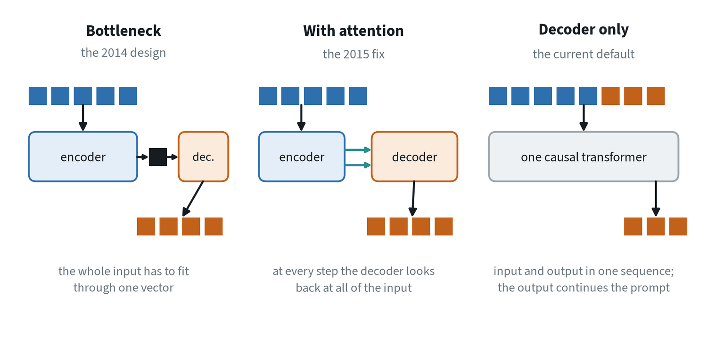
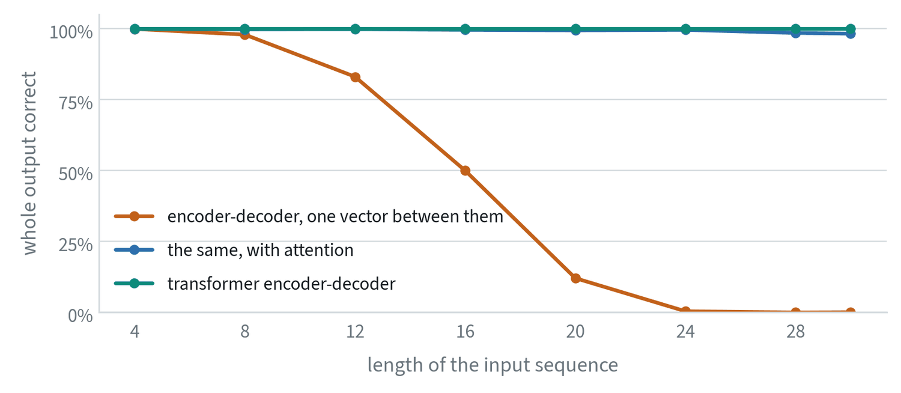
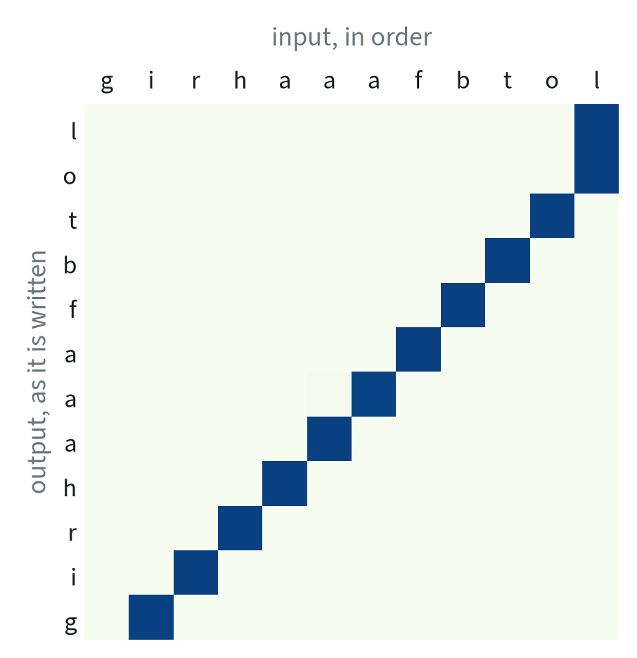

One sequence in, another out
A sequence-to-sequence model reads one sequence and writes another, and the two may differ in length. Translation is the original example: a sentence in, a sentence out. Summarising, transcribing speech, answering a question and writing code from a description are the same shape. So is robot control: a sequence of observations in, a sequence of actions out.
The hard part is that there is no fixed alignment. The third word of the output need not correspond to the third word of the input, and the output can be longer or shorter. The history of these models is the history of how the output side gets access to the input side.
Three designs


- The bottleneck. An encoder reads the input and compresses it into one vector. A decoder writes the output from that vector, one token at a time. It was the first design to work end to end, and everything the decoder knows about the input has to fit in that one vector.
- Attention. Keep every encoder output, and let the decoder look back at all of them at every step, weighting them by relevance. Nothing has to be squeezed through a single vector. This is where attention was invented, three years before the transformer.
- Decoder only. Drop the separate encoder. Put the input and the output in one sequence and train a single causal model to continue it. The input is a prompt, and the output is whatever comes next.
The model as a probability
A sequence-to-sequence model defines the probability of an output sequence given an input , built one token at a time by the chain rule of probability:
Each factor is a softmax over the vocabulary. Training maximises the log-probability of the correct outputs, which is cross entropy summed over positions:
The exponential of the average per-token loss is the perplexity: roughly, how many equally likely choices the model is hesitating between at each step. The same factorisation with an empty is a language model, which is why the two share everything.
The bottleneck, measured


The three models were trained on the same data for the same number of steps. Without attention, accuracy collapses as the input grows: 98% at eight symbols, 50% at sixteen, nothing from twenty-four. The encoder’s single vector, 96 numbers here, cannot hold a long sequence precisely enough to reproduce it.
Adding attention to the same recurrent model, a change of about 30,000 parameters, holds accuracy at 98% or better at every length. The transformer, which is attention throughout, makes no errors at all.


Nobody told the model that reversal means reading the input backwards. The attention weights show that it found out. In translation the same picture shows which source words each output word was drawn from, which is why these weights were first called an alignment.
The attention step, written out
Let be the encoder’s outputs and the decoder’s state at step . Attention scores every input position against the current state, normalises the scores, and returns a weighted average called the context:
The original version used a small network for the score, , known as additive attention. The dot-product form, , is cheaper and is what the transformer adopted and scaled up. The weights are what the alignment figure above plots.
Training: teacher forcing and its cost
The decoder predicts each token from the tokens before it. During training those earlier tokens are taken from the correct output, not from the model’s own predictions. This is teacher forcing. It lets every position be trained in parallel in a single pass, and it is why these models train efficiently.
It also creates a mismatch. In training the model always sees a perfect history. In use it sees its own output, mistakes included, and one early error can send everything after it off course. This is exposure bias, and it is the same problem as compounding error in imitation learning: the model is never shown the states its own mistakes lead to. The remedies are the same too. Train on more varied data, occasionally feed the model its own predictions during training, or generate the output in a way that does not depend on a long chain of earlier choices.
Decoding: choosing the output
| Method | How it chooses | Good for | Weakness |
|---|---|---|---|
| Greedy | The most probable token at each step | Speed; tasks with one right answer | An early poor choice cannot be undone |
| Beam search | Keeps the best few partial outputs and extends them all | Translation and transcription, where accuracy matters | Slower; tends toward short, bland text |
| Sampling | Draws from the predicted probabilities, often with a temperature or a cut-off | Open-ended writing, where variety matters | Can go wrong; not repeatable |
| Constrained | Allows only tokens that keep the output valid | Structured output such as code, coordinates or actions | Needs a description of what is valid |
For robot actions written as tokens, decoding is greedy or constrained, because a sampled outlier becomes a jerk of the arm.
Beam search in detail
Greedy decoding takes the best token at each step, which does not find the best sequence. Beam search keeps the best partial outputs. At each step it extends every one of them with every possible token, scores the results by total log-probability, and keeps the best again.
A raw sum of log-probabilities favours short outputs, because every extra token adds a negative term. The standard correction divides by a function of the length:
with between 0.6 and 1. Beam widths of 4 to 8 capture most of the gain. Much wider beams often make output worse, because the most probable sequence under the model is not always the best one, a reminder that the model’s probabilities are an imperfect guide.
What the tokens are
The model’s vocabulary is fixed in advance. Words would make it too large and unable to handle anything new, and characters would make sequences too long. The compromise is sub-word tokenisation: start from characters and repeatedly merge the most frequent adjacent pair into a new token, until the vocabulary reaches a chosen size. Common words end up as one token and rare ones as several pieces.
| Text | Tokens | Pieces |
|---|---|---|
| pick up the red cup | 5 | pick · up · the · red · cup |
| teleoperation | 2 | tele · operation |
| proprioception | 3 | propri · o · ception |
| unscrewing the moka pot | 7 | uns · cre · wing · the · mo · ka · pot |
| 3.14159 | 7 | 3 · . · 1 · 4 · 1 · 5 · 9 |
These are real outputs of a tokenizer with a vocabulary of about 257,000 entries. Two things matter for robotics. Unusual words cost more tokens and are represented less well. And numbers are split digit by digit, so a model that reads or writes coordinates as text is handling each digit separately, which is one reason action values are given dedicated tokens instead.
Encoder-decoder or decoder only
| Encoder-decoder | Decoder only | |
|---|---|---|
| Input is read | In both directions, by a dedicated encoder | Left to right, as part of the same sequence |
| Parameters | Two stacks, with cross-attention between them | One stack |
| Reusing the input | The encoder’s output is computed once and attended to throughout | The key-value cache does the same job |
| Pretraining | Needs paired inputs and outputs, or a denoising task | Next-token prediction on any text |
| Where it is used | Translation, speech recognition, some robot policies | Language models, vision-language models, most new systems |
Decoder-only models won mainly because of the fourth row. They can be pretrained on unlimited plain text and then asked to do any sequence-to-sequence task by phrasing it as a prompt. The encoder-decoder shape remains where the input and output are different kinds of thing and a specialised encoder helps.
A third option skips the token-by-token chain entirely. Non-autoregressive models produce the whole output at once and refine it over a few passes. Diffusion and flow matching are of this kind, and they are how most robot policies now generate action chunks.
Robot control as sequence-to-sequence
- Action chunking with a transformer. An encoder reads the camera images and joint positions. A decoder writes the next chunk of actions, all at once. This is the encoder-decoder shape applied directly.
- Actions as tokens. A decoder-only vision-language model continues its prompt with action tokens, exactly as it would continue a sentence.
- Instructions to plans. A sentence in, a list of sub-tasks out.
- Video to actions. A sequence of frames in, the actions that produced them out.
Seeing control this way explains why so much carries over from language. The lessons about bottlenecks, exposure bias and decoding were learned on text first, and each has a direct counterpart on a robot. The notes on attention and robot policies continue from here.
Common mistakes
- Judging by per-token accuracy. One wrong token can ruin an output. Score whole outputs.
- Forgetting the mismatch. A model that looks perfect with the correct history can still drift on its own output.
- Sampling where one answer is right. Use greedy or beam search for translation, transcription and actions.
Terms
- Encoder
- The part that reads the input sequence.
- Decoder
- The part that writes the output sequence, one token at a time.
- Teacher forcing
- Training the decoder on the correct earlier tokens instead of its own predictions.
- Exposure bias
- Errors that arise because the model never saw its own mistakes during training.
- Beam search
- Decoding that keeps several candidate outputs and extends the best of them.
- Non-autoregressive
- Producing the whole output at once instead of token by token.
- Perplexity
- The exponential of the average per-token loss; the effective number of choices the model is uncertain between.
- Sub-word tokenisation
- Splitting text into frequent character sequences, so that any string can be written with a fixed vocabulary.
Further reading
- Sutskever et al., 2014. Sequence to Sequence Learning with Neural Networks.
- Cho et al., 2014. Learning Phrase Representations using RNN Encoder-Decoder for Statistical Machine Translation.
- Bahdanau et al., 2014. Neural Machine Translation by Jointly Learning to Align and Translate.
- Vaswani et al., 2017. Attention Is All You Need.
- Bengio et al., 2015. Scheduled Sampling for Sequence Prediction with Recurrent Neural Networks.
- Raffel et al., 2019. Exploring the Limits of Transfer Learning with a Unified Text-to-Text Transformer (T5).
- Zhao et al., 2023. Learning Fine-Grained Bimanual Manipulation with Low-Cost Hardware (ACT).
- Sennrich et al., 2015. Neural Machine Translation of Rare Words with Subword Units (byte-pair encoding).